Omnia Intranet - October 2017
Features
Web Editor Report
Possibility to exclude certain content types from the Web Editor Report.
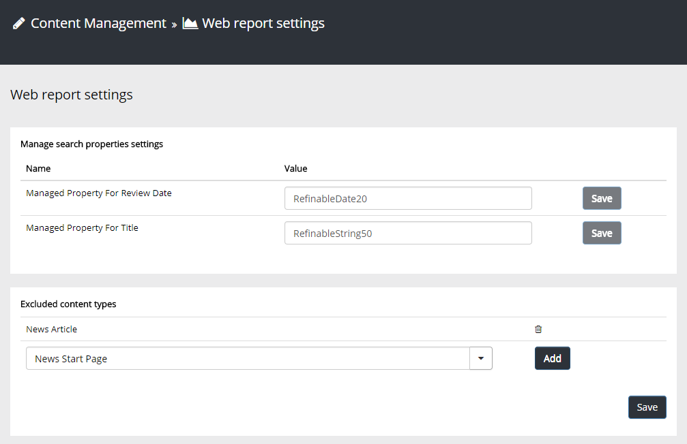
Likes and Comments
Possibility to like comments and to @mention people in comments.
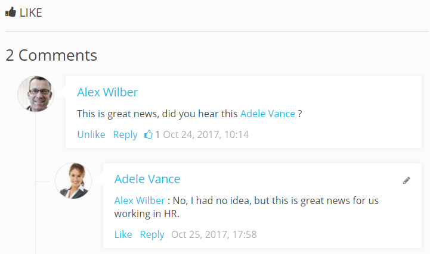
Group Banners
Possibility to group banners. It is possible to show the banners randomized on a page (for example 3 out of 10 banners at a time).
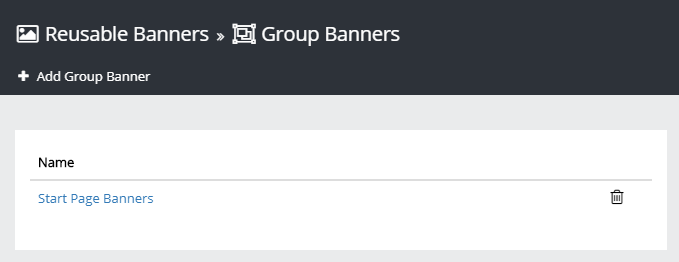
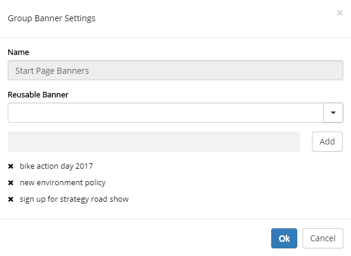
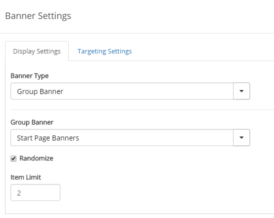
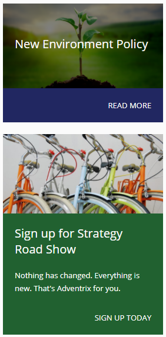
Banner Views
The banner views have been modified to right align the footer and two new banners have been added.
| Image on top | Title on Image | Title and Description on Image |
| 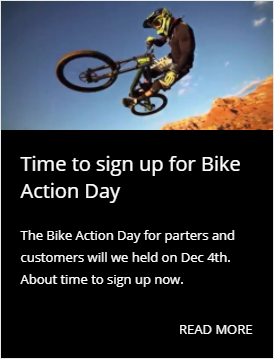 |
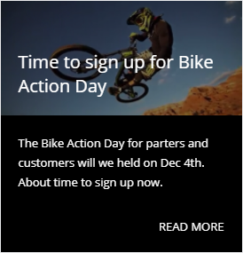 |
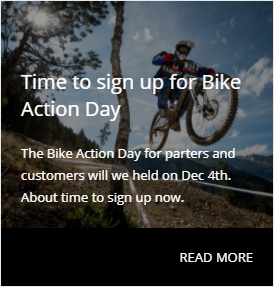 |
My Links
Updated design and improved accessibility in My Links control.
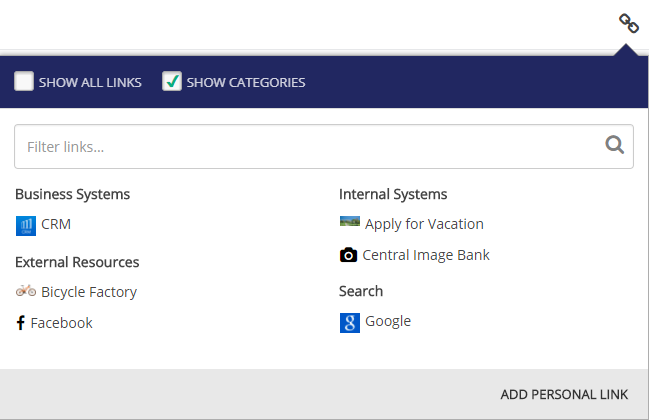
New setting in the My Links block that makes it possible to present links as app icons.
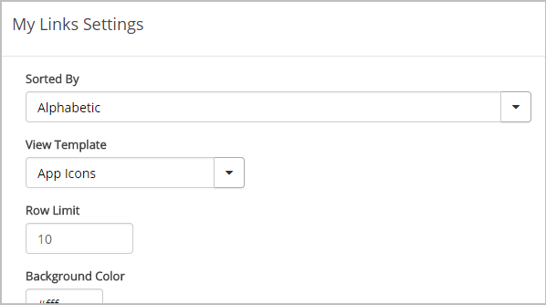
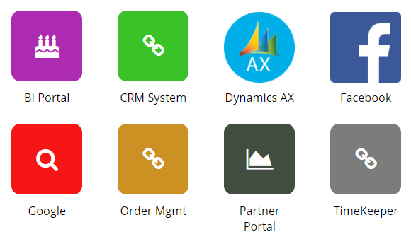
Aggregated Calendar
Possibility to show a legend below the Aggregated Calendar and a new UX for editing events. When editing events in the new UX, an event can be targeted to a specific group of people.
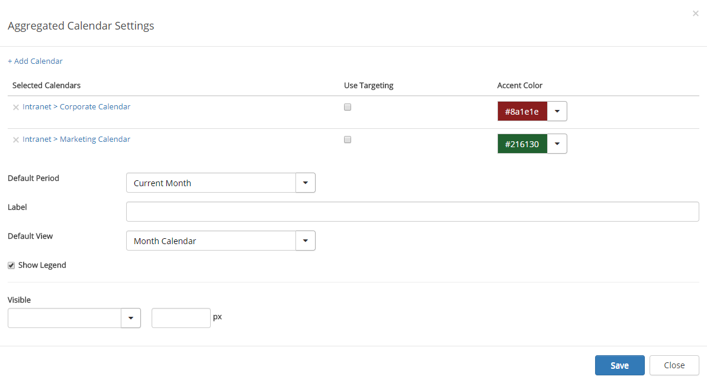
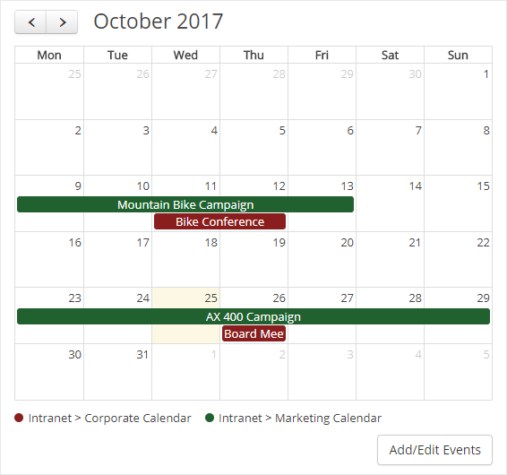
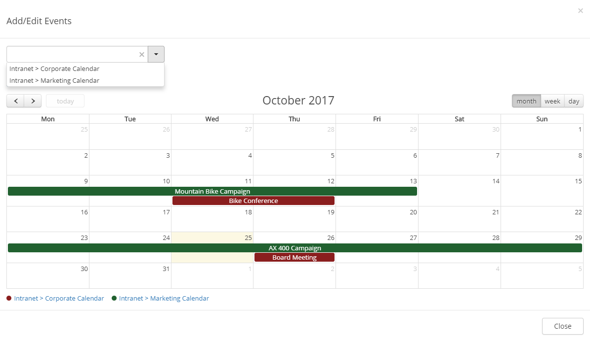
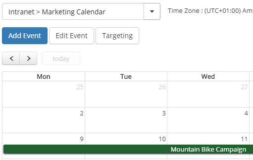
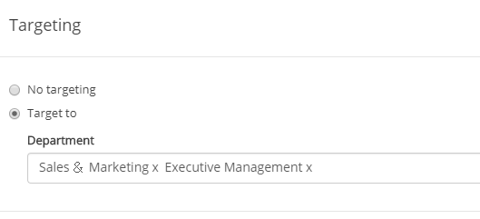
Latest News and Related News
Improved accessibility and possibility to show news image in "Latest News" and "Related News".
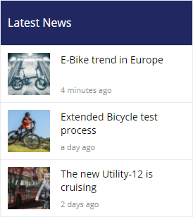
People Rollup
Improved accessibility and design in "People Rollup".
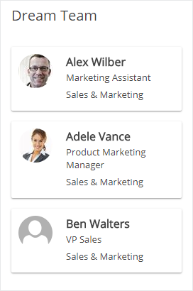
Bug Fixes
- When no news are shown in the News Viewer, the link to the news center will not work.
- Not possible to filter on more than one fixed value for a specific property in the News Viewer.
- Include Child Terms did not work for fixed values in the News Viewer.
- If a page property of type Person was configured to show the label, the label was not shown.
- The start node in the breadcrumb on quick pages pointed to the regular start page instead of the the quick page version of the start page.
- A custom link in the mega menu was not shown as selected when pointing to an web page in the current site.
- Wrong margins in the mega menu between different levels in the navigation.
- If no news articles matched the selected criteria in the News Center, a text saying "There are no news articles matching the selected criteria." is shown instead of nothing.
- Some news rollup views shows social dates in the future (for example "In 2 hours").
- The size of the navigation cache client-side has been reduced.
October 2017 Patch 1 (1.0.7805)
- Problem with Vietnamese characters in Important Announcements.
October 2017 Patch 2 (1.0.7900)
- Problem with Swedish characters in RSS Feed.
- Design issues with background color on icons in My Links.
- In a very specific case it was not possible to publish a page with error "You must specify a value for this required field"
- If color was left empty in banners, the preview made a fallback to central colors, but colors were not set when page was published.
October 2017 Patch 3 (1.0.8121)
- Error in news viewer when querying on fixed taxonomy value with reusable term.
- Error when having too many Trending Pages components on the startpage.
October 2017 Patch 4 (1.0.8360)
- Problem with nav sync to SharePoint term store for legacy pages when default language has been changed in term store to Swedish.
- Permission problem in Aggregated Calender when used in Site Collection Only Mode.